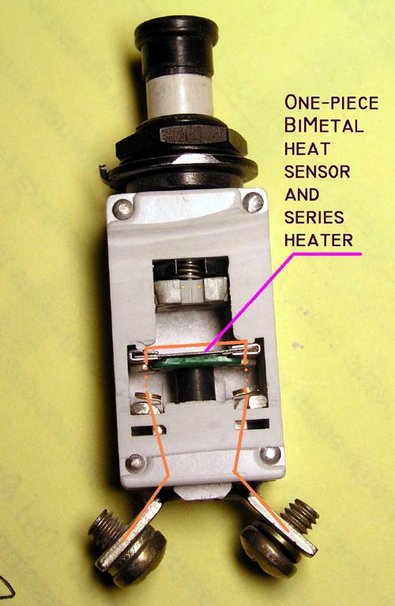
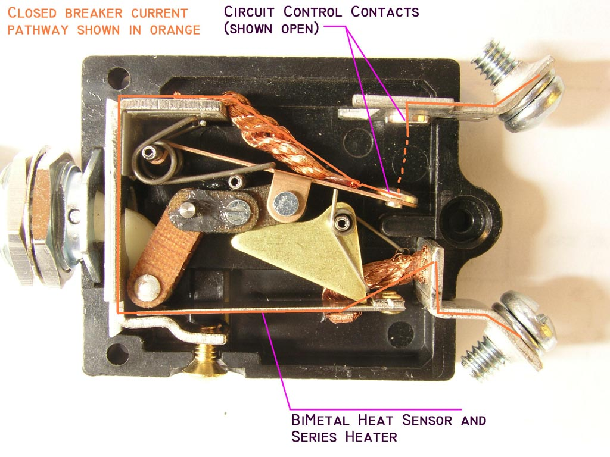
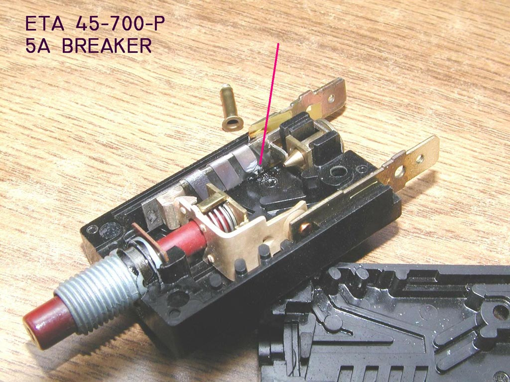

|
|
Over the past several months leading up to the crafting of these notes
there have been discussions about the suitability of certain circuit breakers
used in conjunction with the crowbar over voltage protection system.
This writer expended a lot of time and energy responding
to cabbages and tomatoes tossed in from multiple directions only to discover that
having put one issue to rest, more cabbages and tomatoes were launched. During the
course of the conversations, not one part number (or breaker fabrication philosophy)
was proffered to support the allegations of the garbage chuckers . . .
Due to the diligence, curiosity and willingness to share by an AeroElectric-List
reader (Thank you Mr. Baker!) we now have hard data upon which useful
critical review can take place for at least one brand and style of breaker:
|
Before we visit Mr. Baker's discovery on a breaker that failed in his
airplane, let's look at two breaker configurations with a long and
successful history in aircraft. The first is one of many Klixon miniature devices
cut open in this view. A feature of being an engineer is the opportunity to acquire an appreciation for what I've often called "the elegant solution". When I first peered into this cutaway and began fiddling with the mechanism, I was struck by the cleverness of the designer(s). This breaker features double break contacts . . . a really good deal in higher voltage systems because this architecture effectively doubles the contact spreading velocity and enhances the breaker's ability to clear a fault. However, this is not even beginning to be a concern for a 14v system. Next we see that the bi-metal temperature sensitive element, the heater that provides a temperature rise on current flow and the frame that supports and connects the two movable contacts are combined in one and the same piece of material. This is strikingly elegant from the perspective of reduced parts count but more importantly for the intimate physical relationship between the bi-metal device tasked with tripping the breaker open. You can see this construction more closely by Clicking Here. |  |
|  |
Click here for larger image Here's a cutaway on
a popular product from Potter-Brumfield. It's a switch-breaker combination that's been
used on Bonanzas and Barons for a very long time and is still used to this day. Note here too that the current sensing heater and the trip controlling bi-metal strut are one and the same device. In this photo and the one above, the pathway for current flow through the closed device is traced in orange. Click here for view of this product with the switch contacts closed. |
|
Click here for larger image Here's
Mr. Baker's failed breaker. I've pointed to a damaged segment in a ribbon heater
that is wrapped around the bi-metal trip strut. To prevent shorts to
bi-metal strut, electrical isolation is provided by a layer of INSULATION clearly
visible under the heater and over the strut. Effects of this insulation are intuitively obvious. Given both electrical and THERMAL isolation between the heater and the bi-metal strut, some magnitude of current through the breaker will produce a rate-of-rise in heater temperature that's too steep with respect to heat rejected into the bi-metal strut. The predictable consequence is illustrated and demonstrated in the form of a fuse heater. Contrast this feature with the two breakers cited above. The integral heater/bi-metal construction offers no such thermal barrier and contributes to an ability of the breaker to respond very quickly to extraordinary faults without suffering a life-limiting event (which is a requirement of Mil-C-5809 cited below). |  |
You're more likely to experience an OPEN wire than a hard-faulted wire downstream of any breaker. In either case, the system powered by that breaker has become unavailable to you. I wouldn't loose any sleep over breaker selection but based on experience you may consider alternative breakers at some time in the future . . .
Remember:
If these tenents are observed (not difficult to do) then it makes no difference where you buy your parts, how much money you spend on them or which parts you select. You're free to try any selection with the goal of exploring how long it will last or how well it will perform.
FOLLOW UP DATA: There's no reason this page needs to be set in stone. If any reader has an breaker brand/style that he/she would like to add to the breakers cited above, I'd be pleased to receive samples and add them to the study.
{kind=link}
{kind=link}
{kind=link}
{kind=link}